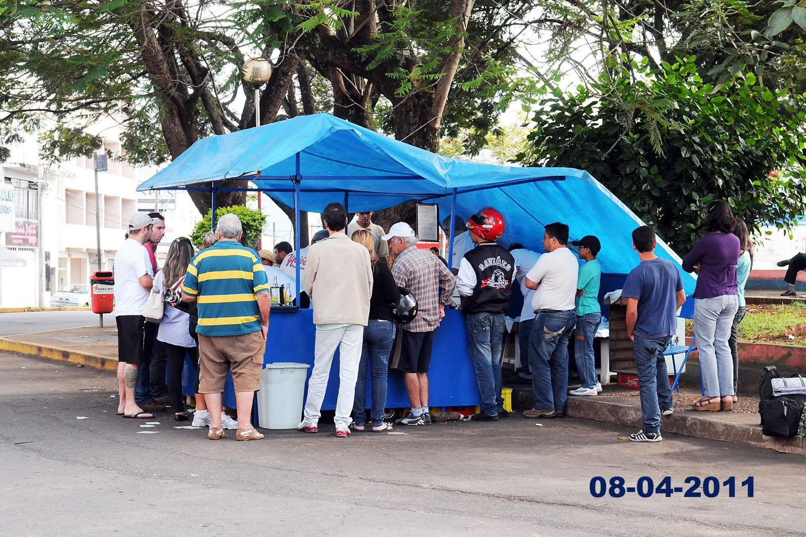

A Pastelaria do Tonhão é uma tradicional pastelaria localizada no coração de Varginha, Minas Gerais. Com mais de 50 anos de história, somos conhecidos por nossos pastéis deliciosos e feitos na hora. Nossa missão é oferecer aos nossos clientes uma experiência saborosa e acolhedora, com qualidade e preço justo. Nossos pastéis são preparados com ingredientes frescos e sem conservantes, garantindo o melhor sabor para você e sua família.
Na Pastelaria do Tonhão, nosso compromisso é oferecer o melhor para os nossos clientes. Todos os nossos produtos são feitos na hora, com ingredientes frescos e selecionados. Além disso, prezamos pela qualidade no atendimento, sempre buscando atender de forma rápida e cordial. Queremos que você se sinta em casa ao saborear nossos pastéis e outras delícias!
A Pastelaria do Tonhão foi fundada em 1960 por Tonhão, que começou vendendo pastéis em sua pequena barraca na praça central de Varginha. Com o passar dos anos, o negócio cresceu e se tornou uma das pastelarias mais tradicionais da cidade, conquistando a confiança e o carinho dos clientes. Hoje, a Pastelaria do Tonhão é referência em sabor e qualidade, com uma grande variedade de pastéis e outros produtos deliciosos.
